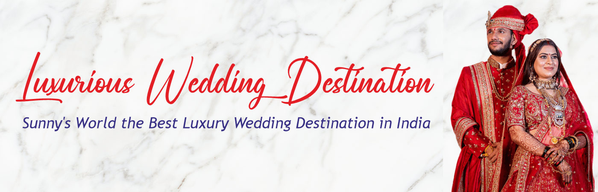
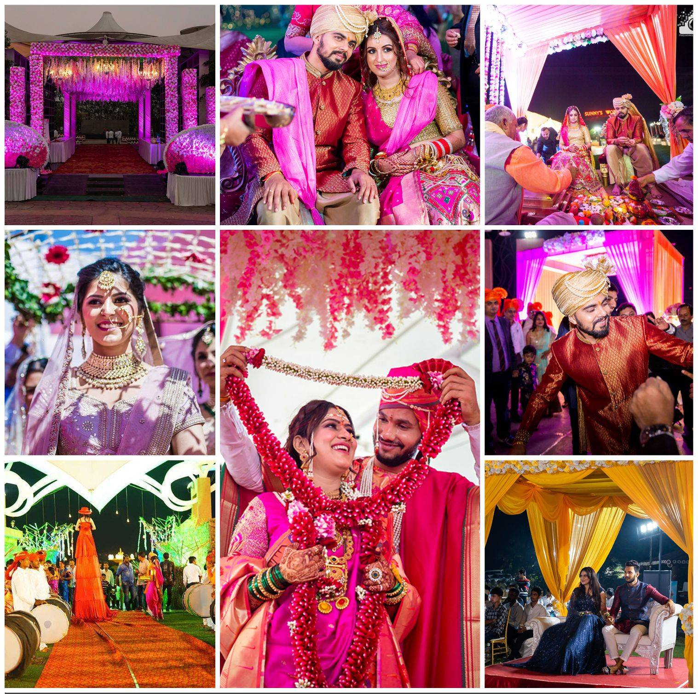
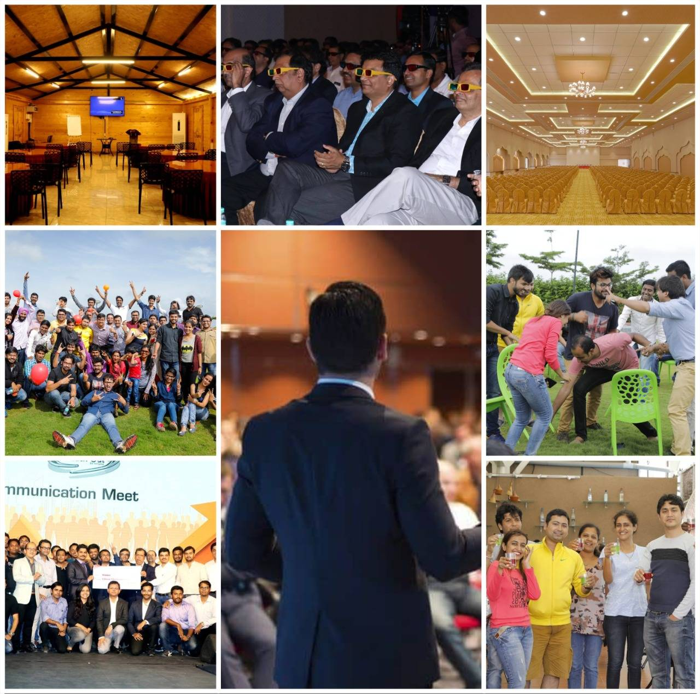

A Perfect Destination For Every Occasion |
Welcome to Sunny's World—The Best Resort in
|

A Perfect Destination For Every Occasion |
Welcome to Sunny's World—The Best Resort in
|

 |
Wedding By Sunnys WorldPlanning for a Destination Wedding in Pune?A luxury wedding, a dream destination wedding in Pune, or a grand |
Corporate EventsBest corporate events and destination team outings at one of the most |
 |
Resort & Adventure ParkBest resort and adventure park in Pune with over 100+ thrilling |
|
Sunnys World ResortExperience a magical family getaway in Best Resort in Pune and indulge |
 |


Sr. No. 217, Pashan Sus Rd, Near Mumbai- |

+91-9657555555 |

admin@sunnysworldpune.com |
|
Sunny’s World Is The Best And |
Adventure ParkThe tiger eye adventure resort |
Quick LinksWedding event gallery |
ContactSr. No. 217, Pashan Sus Road, |